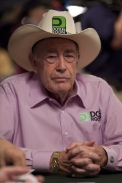

POKER HALL OF FAME


Hall of Fame
Benny Binion
| Imagine | Nume | Anul în care a fost admis |
|---|---|---|
| Phil Ivey | 2017 | |
| David Uliott | 2017 | |
| Todd Brunson | 2016 | |
| Carlos Mortensen | 2016 | |
| Jen Harman | 2015 | |
| John Juanda | 2015 | |
| Jack McClelland | 2014 | |
| Daniel Negreanu | 2014 | |
| Tom McEvoy | 2013 | |
| Scotty Nguyen | 2013 | |
| Eric Drache | 2012 | |
| Brian Roberts | 2012 | |
|
Barry Greenstein | 2011 |
| Linda Johnson | 2011 | |
| Dan Harrington | 2010 | |
| Erik Seidel | 2010 | |
| Mike Sexton | 2009 | |
| Henry Onerstein | 2008 | |
| Dewey Tomko | 2008 | |
| Barbara Enright | 2007 | |
| Phil Hellmuth | 2007 | |
| Billy Baxter | 2006 | |
| TJ Cloutier | 2006 | |
| Crandell Addington | 2005 | |
| Jack Binion | 2005 | |
| Berry Johnston | 2004 | |
| Bobby Baldwin | 2003 | |
| Lyle Berman | 2002 | |
| Johnny Chan | 2002 | |
| Stu Ungar | 2001 | |
| Roger Moore | 1997 | |
| Julius Oral | 1996 | |
| Jack Keller | 1993 | |
| Thomas Austin | 1992 | |
| David Reese | 1991 | |
| Benny Binion | 1990 | |
| Fred Ferris | 1989 | |
|  | Doyle Brunson | 1988 |
| Jack Straus | 1988 | |
| Walter Clyde | 1987 | |
| Henry Green | 1986 | |
| Red Hodges | 1985 | |
|
Murph Harrold | 1984 |
| Joe Bernstein | 1983 | |
| Tom Abdo | 1982 | |
| Bill Boyd | 1981 | |
| Blondie Forbes | 1980 | |
| Nick Dandolos | 1979 | |
| James Butler | 1979 | |
| Edmond Hoyle | 1979 | |
| Felton McCorquodale | 1979 | |
| Johnny Moss | 1979 | |
| Red Winn | 1979 | |
| Sid Wyman | 1979 |